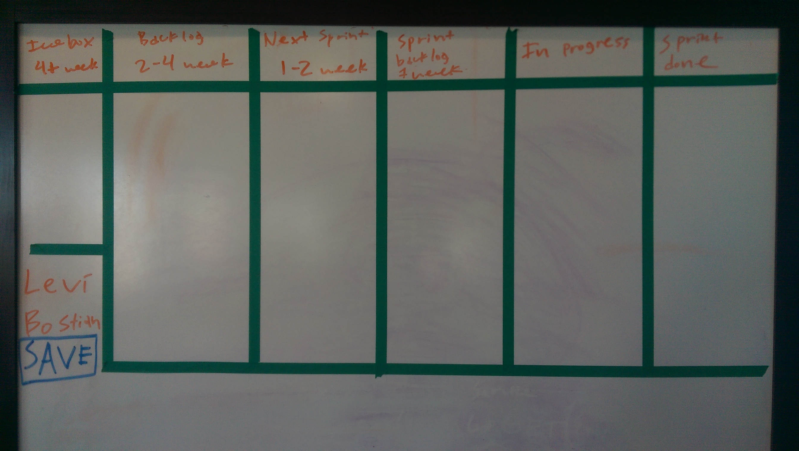
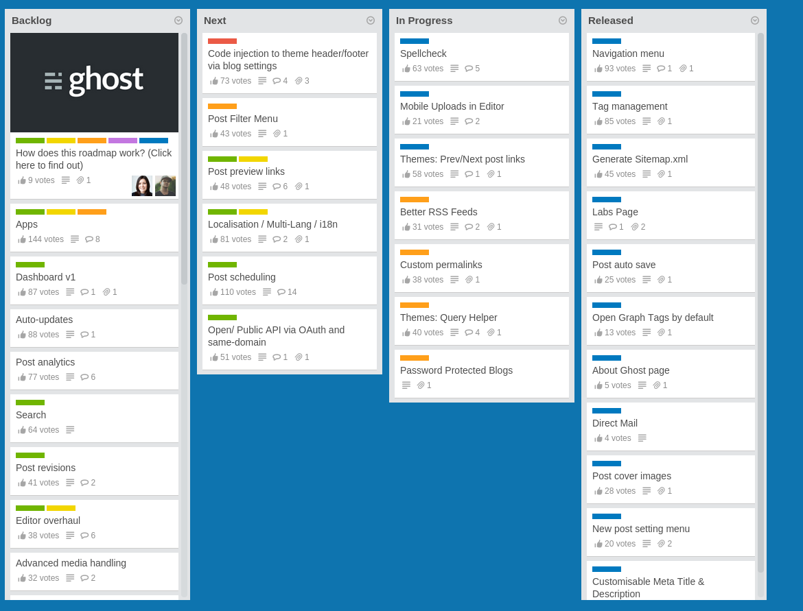
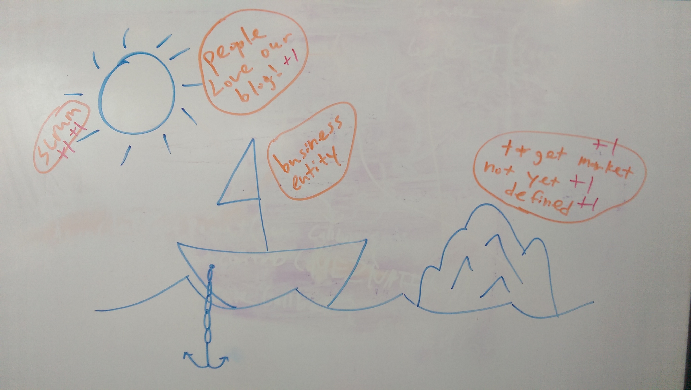
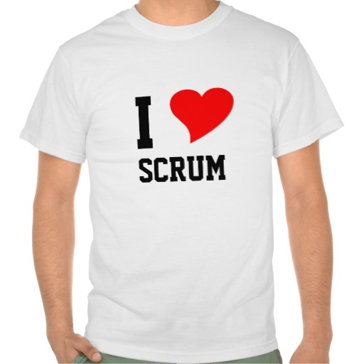

This week in the world of me2
It was a pretty laid back week this week for the me2 team. We met a few times together to discuss some of our visions as a team and where we see me2 in the future. Reflecting back on the past and where we see the future.
Besides that, I gave a handful of talks to a few local middle schools and high schools about why I love my career. This was exciting for me because I got to meet young people who have the same passions for me2 as I do. It is exciting to me when a young person comes up to me, shares something difficult about their life growing up and says "Thank you" for building something like me2. That is enough motivation for me to go back to the office and make this happen.
Have you ever heard of scrum?
Scrum is yet another methodology that the me2 team uses on a daily basis. Today it seems like all successful tech startups are using some varient of scrum in their daily workflow. After getting to know each other in the team better, it is finnally starting to fall into place.
Scrum is a workflow that software companies that works alongside the Agile software development methodology. From large company to startup, you will find scrum all over the place. I can see why! It simply works!
Why scrum makes sense.
When your startup creates software, there are lots of deadlines, milestones, and releases to follow. When your startup writes software in an agile way you release new updates to your software every couple of weeks instead of the old traditional method of releasing new updates every few years. When your company releases new updates so frequently it is super important to make sure that everyone is on the same page and working efficiently so a deadline is not missed. This is where scrum comes in.
Break it down. Month by month, week by week, day by day.
Every day you go into the office, you work on tasks. Lots of tasks that simply need to be done. These tasks might need to be done today, next Tuesday, or they might be so far in the future they don't have a due date yet. These tasks need to be planned out as a team so everyone agrees on when a task is being actively worked on, or when it is planned to be worked on. After your team agrees upon the tasks to work on, the tasks needs to organized and displayed either digitally or physically where everyone can view them at any moment.
This board (you could call it a scrum board but I have heard it be called many other things such as sprint board) contains many columns. Each column represents a milestone (aka a sprint). Under these columns are tasks that are planned for that specific sprint. Sprints are usually 1 week in length with other sprints planned out behind it so you know everything your team is going to be working on for the next month or so. You are not allowed to work on a task unless it is on the board in the current sprint.
Well, life happens and sometimes an emergency pops up with a customer and a task needs to be completed ASAP. This is why scrum also incorporates daily stand-ups. Every day your team gets up together, goes to the board and talks about what you have done since yesterday's stand-up and if you are blocked on anything that needs to be resolved. This is the time where you get to bring up emergency tasks so you can change the sprint as a team. Stand-ups are designed to make sure everyone is working efficiently and not blocked on anything.

Here is a physical board planning out tasks. Now all you need to do is add tasks to it...

A digital board (via Trello.com) planning out tasks. This is the planning board of the Ghost team. There is a scrum for Trello Chrome extension as well if that is of interest.
There should never be a time where you have no idea what someone on your team is working on. If you don't know, you should be able to go to the board and view it. If you don't have any idea what someone is working on, that is a big problem. How on Earth could your team meet deadlines and milestones if you are not all in sync together?
One more thing. When moments get frustrating, there is a time and place to let it go.
We are all human. You have an awesome idea for the product that you swear will lead to success. One of the other members of your team disagrees and thinks it will fail the company in a heart beat. You start to discuss it and soon you are yelling in each others faces. Then there are moments when someone on the team decides to come into work late or the latest release goes out a week late. Conflicts happen to all teams. How do you bring it up? Retrospectives are your friend.
Retrospectives are meetings held once a week as a team where you discuss things in your team that has been going well we should continue, things holding us back, and things that we need to watch out for in the future and work on it now to avoid a big block. There are many ways to conduct a retro with your team. Below is an example of how we do our retrospectives.

One method of doing a retrospective.
We go to a white board, draw a sun (representing good things we are doing), a ship with an anchor (representing things holding us back) and an ice burg (representing dangers we need to watch out for). Everyone on the team receives a marker and goes up to the white board. With 10 minutes on the clock, each member of the team writes items down on the board (in the picture these items are in orange). After the 10 minutes is complete, each member discusses their item in a short 10-30 second blurb. More then likely, other members of the team know what you are talking about so they don't need a big explaination.
After everyone discusses their items, everyone then gets 5 votes. You go with your marker and put a "+1" on items on the board that you feel we should focus on (representing in red marker in the picture above). The top 5 items no matter if they are good/bad are then acted on that next week.
Retrospectives are a great way to bring up frustrations as well as give motivation to the team to keep working hard. Without retros your team might get to an unhealthy point together. That is easy to do in a startup so use retros to prevent that as much as possible.
There was a time that everyone on our team did their own thing.
When we first started working on me2 full-time back in January, we had weekly meetings to discuss how our week went, what tasks we worked on individually and what we were planning on working on the following week. Because all of us have different disciplines, we did not feel there were any individual teams such as a marketing team, or a design team. We just thought that if you are our marketing guy you go off and do your own marketing things and tell us how that went that week. Well, this kind of worked but it felt like we were not moving forward.
We did not realize that in fact, we did have teams. All of us together formed a team. We should all be communicating together working as a team to complete tasks as an entire company not just individuals. At my previous job we ran a type a scrum workflow that worked well for us but we did it exclusively as an engineering team. Because our me2 team's engineering team consists of me, I figured scrum was not the right fit for us. After thinking about it, I was wrong. Scrum works perfect for entire companies!
We found that every week when we got together to talk about the past week we saw there was progress being made because stuff was getting done individually. The problem was that the stuff that was getting done was not in sync together. Someone would work on something that really could wait for another week or two. One person's priority depended on work from another person and work would become late. Sure stuff was getting done, but were we really moving forward?
Now that we use scrum...
...everyone knows what everyone else is working on. We can actually see a month into the future and have a good feeling where we will be at that point in time rather then just a wild guess of individual assumptions. Emergency tasks that pop up can now be completed efficiently with everyone being informed about it and can plan accordingly. We do not work as individually together and instead ask for help from each other to complete tasks. Scrum is something you need to work on to get right. We still have a ways to go until we have it working just right. Once you have it working right for your team, it will reward you greatly in the future! We love scrum!

Thinking about getting this...
Every young person struggles at some point in life. We are here to say #me2. You are not alone. @me2nation
Twitter
Instagram
Facebook
Website
Blog